VMware Workspace ONE Access 23.09
Navigation
- Change Log
- Planning
- Upgrade
-
Prep:
- DNS Configuration
- LDAP Accounts
- SQL Database
- OVF Deployment
- Setup Wizard
- SSH – Enable Root Access
- Identity Manager Certificate
- Load Balancing
- Windows Connector
-
Configure:
- Sync Connector Redundancy
- Sync Group Membership
- Logon Experience
- Administrators
- License
- SMTP
- Kerberos Authentication
- Customize Appearance
-
Resources:
- VMware Access – Connect to Horizon
- Horizon Pools Catalog
- VMware Access User Portal
:idea: = Recently Updated
Change Log
- 2022 Dec 14 - updated article for VMware Workspace ONE Access 23.09
- 2022 Dec 14 - updated article for VMware Workspace ONE Access 22.09.1
- 2022 Oct 13 - updated entire article for VMware Workspace ONE Access 22.09
- 2021 Sep 8 - updated entire article for VMware Workspace ONE Access 21.08
Planning
VMware Workspace ONE Access (formerly known as Identity Manager) is a component of VMware Workspace ONE.
- For Horizon, VMware Workspace ONE Access enables integration of additional apps from Citrix and the web (e.g., SaaS).
- For full functionality, VMware Workspace ONE Access should be paired with VMware Workspace ONE UEM (aka AirWatch; not detailed in this article).
Workspace ONE Access System and Network Configuration Requirements at VMware Docs.
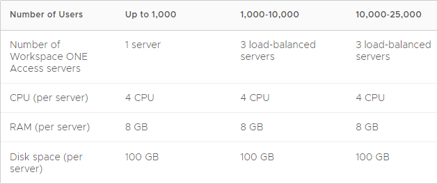
From Workspace ONE Access Architecture in the VMware Workspace ONE and VMware Horizon Reference Architecture:
Single data center:
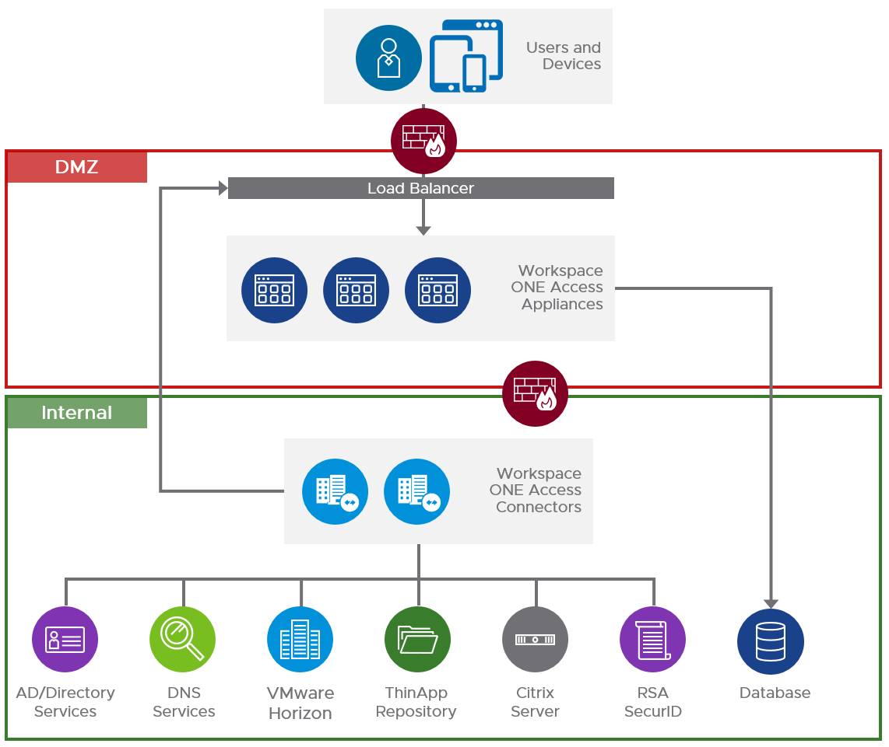
Multiple data centers:
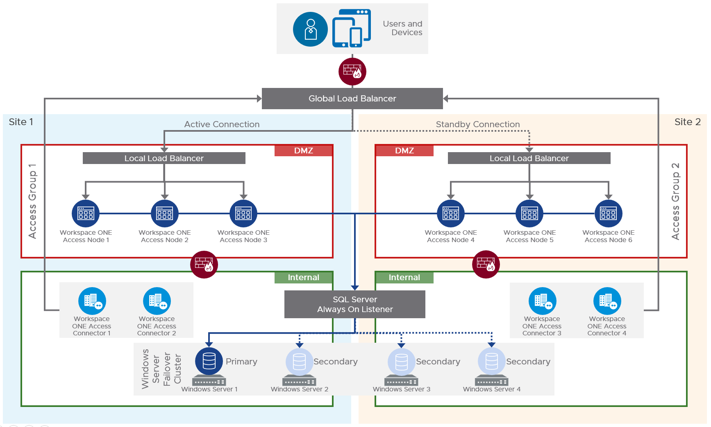
Outbound firewall requirements are detailed at VMware Docs.
Upgrade Appliance
Version 19.03 and newer no longer include the embedded Connector so you must deploy one or two Windows machines to run the external connector. The embedded Connector version 19.03 can be migrated to the external Windows Connector 23.09.
See Supported Upgrade Paths at VMware Docs:
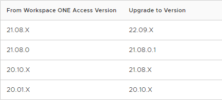
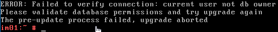
For clusters, remove all nodes except one from the load balancer and upgrade the node that is still connected to the load balancer. Then upgrade the remaining nodes.
If you have the older 19.03 Identity Manager Connectors, then see Migrating to VMware Workspace ONE Access Connector 22.09 at VMware Docs.
To upgrade an appliance:
- Ensure SQL is version 2014 or newer.
- Backup the database.
- Make sure the VMware Access SQL Service Account is a db_owner on the VMware Access database.
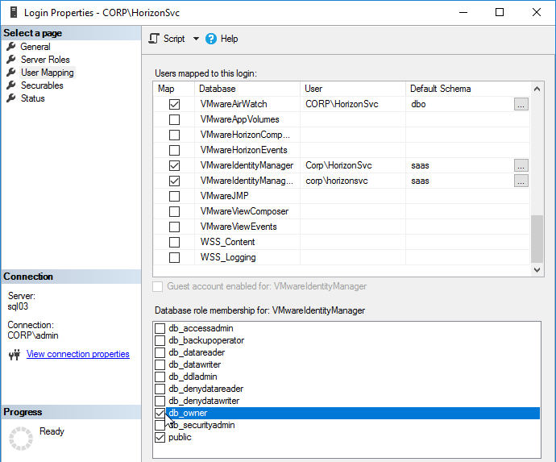
- In the Access admin console, go to Dashboard > System Diagnostics Dashboard to verify no issues with the appliance.
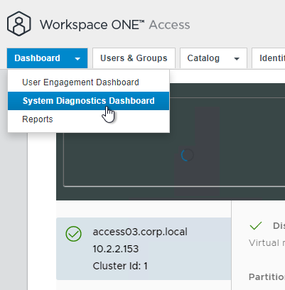
- SSH (e.g., Putty) to the appliance as sshuser and then run su to elevate to root user.
- Run df -h to verify at least 4 GB of free space on the / partition.
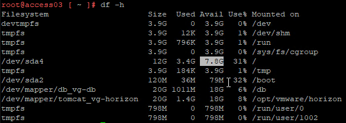
- For online updates, verify that the virtual appliance can resolve and reach vapp-updates.vmware.com on ports 80 and 443.
- If your appliance is version 21.08.0.1 (not 21.08.0.0), then download update-fix.tgz and install it as detailed at VMware Docs.
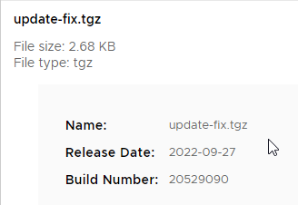
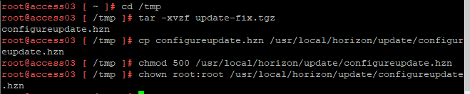
- Run /usr/local/horizon/update/updatemgr.hzn check to verify that an update is available.

- Snapshot the appliance.
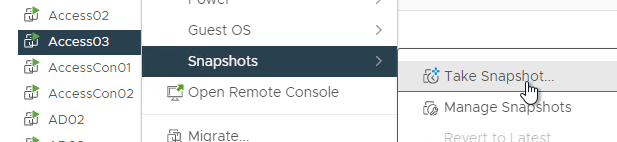
- Run /usr/local/horizon/update/updatemgr.hzn updateinstaller

- Run /usr/local/horizon/update/updatemgr.hzn update. Updating will take several minutes.
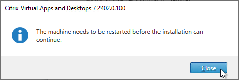
- On the first node, enter y to perform a reindex. Enter n on other nodes.
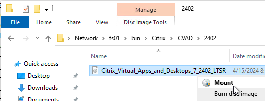
- Reboot the VM when done.

- Upgrade log files are in the /opt/vmware/var/log directory, or https://WS1AccessHostnameFQDN:8443/cfg/logs
- Run the check command again to see if there are any other updates available.
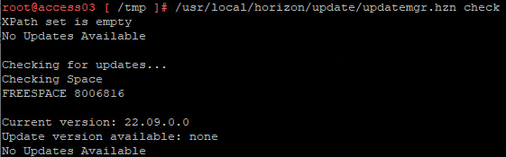
- Repeat the upgrade on the remaining nodes.
- See Post-upgrade Configuration of Workspace ONE Access at VMware Docs to reinstall the provisioning adapters, refresh People Search Configuration, update Log4j Configuration Files, and fix Cluster ID in second data center
-
Upgrade your Connectors to a version that is the same or older than the appliance. You might need a new es-config.json file to add support for Virtual Apps Collections.
- Before upgrading, suspend all the connector services at Integrations > Connectors > Manage
- RSA needs changes if upgrading from Connector 20.10 and older
New Deployment Preparation
DNS Configuration
If you intend to build multiple appliances (3 or more) and load balance them, specify a unique DNS name for each appliance. The Load Balancing DNS name is different from the appliance DNS names. For example:
- Appliance 1 = access01.corp.local
- Appliance 2 = access02.corp.local
- Appliance 3 = access03.corp.local
- Load Balancing Name = access.corp.com. This name is used both internally and externally.
VMware Workspace ONE Access DNS names are separate from Horizon DNS names.
You’ll need SSL certificates that match these names.
Each of these DNS names must have a corresponding reverse DNS pointer record.
- Create DNS records for the virtual appliances.
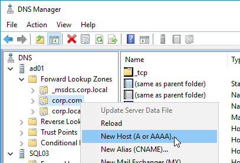
- Create reverse pointer records too. Reverse pointer records are required.
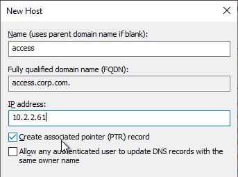
LDAP Accounts
- All accounts synced with VMware Workspace ONE Access must have First Name, Last Name, and E-mail Address configured, including the Bind account.
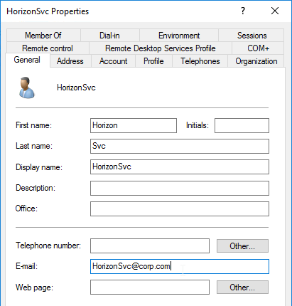
- Create a new Active Directory group for your VMware Workspace ONE Access users. Assign this group to your pools instead of assigning Domain Users.
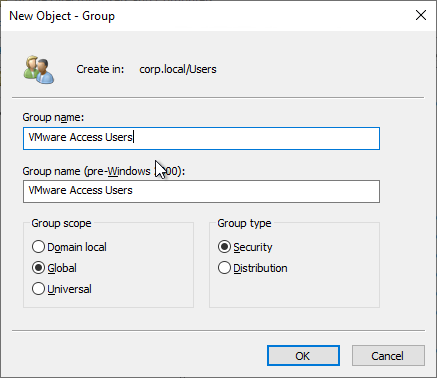
SQL Database
If you want to build multiple Identity Manager appliances and load balance them, configure them with an external database (e.g. Microsoft SQL).
For a script that performs all required SQL configuration, see Configure a Microsoft SQL Database at VMware Docs.
- In SQL Management Studio, create a New Query.
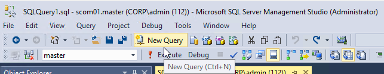
-
Copy the SQL commands from VMware Docs and paste them into the New Query window.
- For Windows Authentication, copy the commands from Configure the Microsoft SQL Database with Windows Authentication Mode.
- For SQL Authentication, copy the commands from Configure Microsoft SQL Database Using Local SQL Server Authentication Mode.
- Change the values in the brackets and remove the brackets. Don't forget the collation at the top of the script.
- Then click Execute.
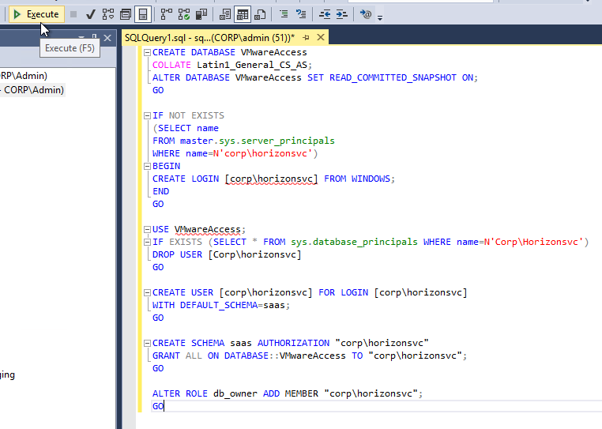
- Configure SQL Autogrowth to 128 MB as detailed at VMware Docs.
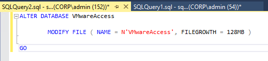
OVF Deployment
- Download the VMware Workspace ONE Access 23.09 Virtual Appliance OVA file.

- In the vSphere Web Client, right-click a cluster and click Deploy OVF Template.
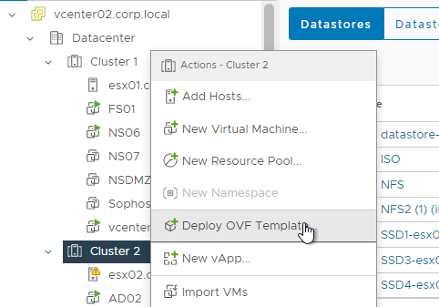
- In the Select source page, browse to the identity-manager-23.09.0.0_OVF10.ova file, and click Next.

- In the Select name and location page, enter a name for the VM, and click Next.
- In the Select a resource page, select a cluster, and click Next.
- In the Review details page, click Next.

- In the Accept License Agreements page, click Accept, and then click Next.
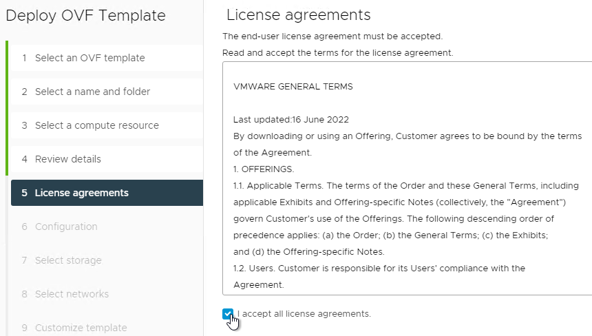
- In the Configuration page, select a size and click Next. 4 vCPU and 8 GB of RAM are sufficient for 25,000 users.
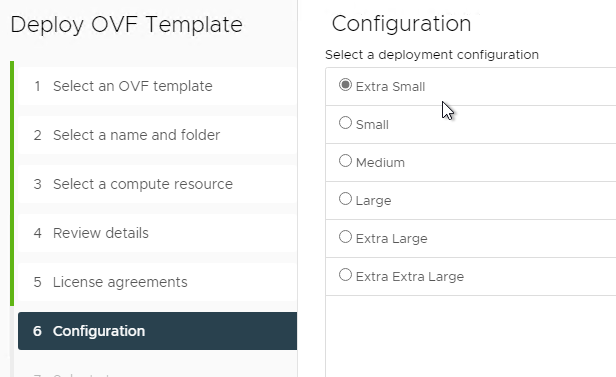
- In the Select storage page, select Thin Provision, select a datastore, and click Next.
- In the Select networks page, select the network for the appliance. You can deploy it either internally, or in the DMZ. If in the DMZ, you can later install Workspace ONE Access Connectors in the internal network in outbound only mode. Click Next.
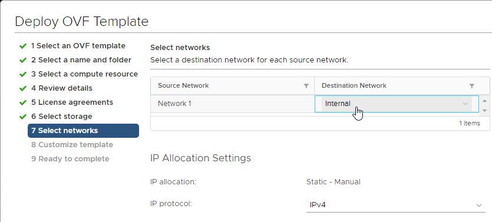
-
In the Customize template page:
- Select a time zone.
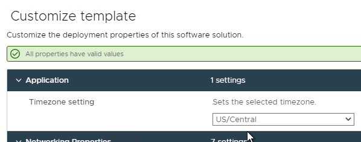
- Expand Networking Properties if it's not already expanded.
-
Host Name - Enter a hostname for the first appliance.
- If you intend to build multiple appliances and load balance them, then each appliance needs a unique name that does not match the load balanced name. If you only want to build one appliance, then the appliance Host Name should match whatever users will use to access Identity Manager.
- DNS and Gateway - In the Networking Properties section, enter the standard DNS and Gateway information.
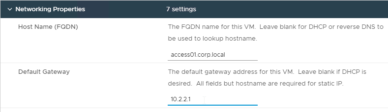
- According to Install the Workspace ONE Access OVA File at VMware Docs, the Domain Name and Domain Search Path fields are not used.
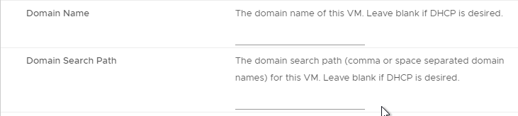
- IP Address - Enter the IP address that is configured in DNS for the host name. DNS reverse lookup for this IP address must resolve to the appliance Host Name.
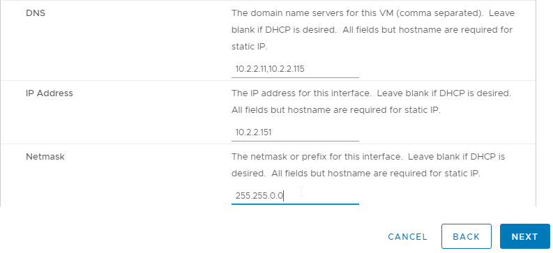
- DNS and Gateway - In the Networking Properties section, enter the standard DNS and Gateway information.
- Click Next.
- In the Ready to complete page, click Finish.
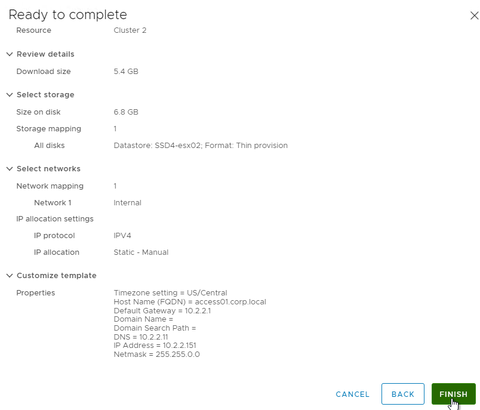
- If you intend to build multiple appliances and load balance them, then each appliance needs a unique name that does not match the load balanced name. If you only want to build one appliance, then the appliance Host Name should match whatever users will use to access Identity Manager.
- Select a time zone.
Setup Wizard
- Power on the appliance.
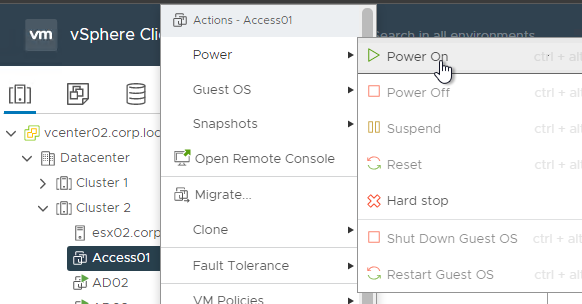
- Wait for the appliance to power on and fully boot.
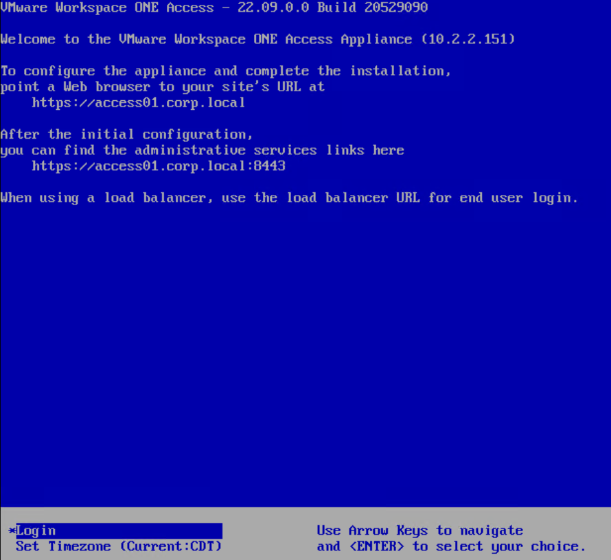
-
Go to https://myAccessFQDN to access the Access Setup Wizard.
You must connect to the DNS name. Connecting to the IP address will cause problems during the database setup process.
-
In the Set Passwords page, enter passwords for the three accounts and click Continue. Notice that two of the passwords must be 14 characters or longer.
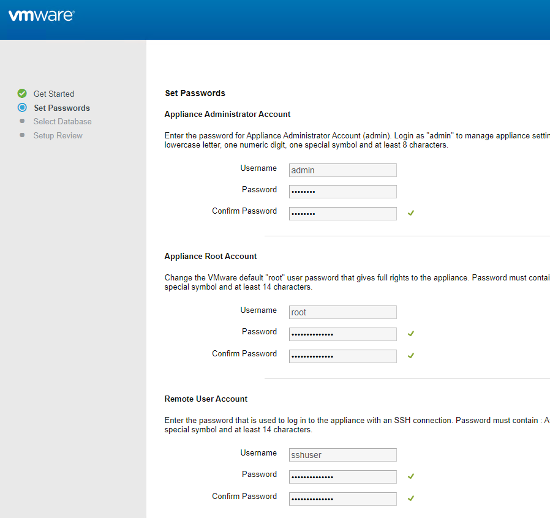
-
In the Select Database page, change it to External Database.
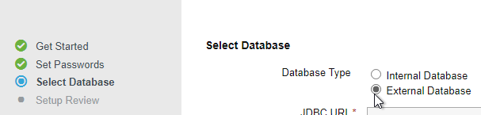
Note: this page will only function properly if your address bar has a DNS name instead of an IP address.
-
For Windows authentication, enter a JDBC URL similar to the following (VMware Docs), enter credentials for the Horizon Windows service account, and then click Continue. The connection string changed in version 22.09.
-
For SQL authentication, enter a JDBC URL similar to the following, enter the credentials for the Horizon SQL account, and then click Continue. Access 21.08 and newer has an option to encrypt the database connection.
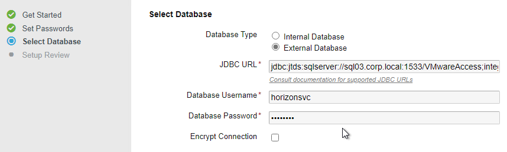
-
The database will be configured.
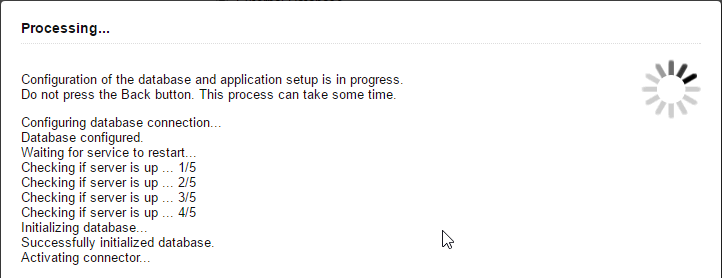
- In the Setup Review page, click the link to log in to the Admin Console.
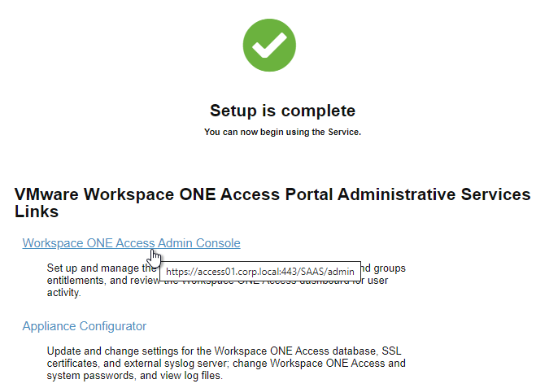
SSH – Enable Root Access
This is optional. Enabling root access lets you use root credentials when using WinSCP to connect to the appliance.
- Putty to the VMware Workspace ONE Access appliance.
- Login as sshuser.
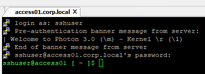
- Run su - and enter the root password.
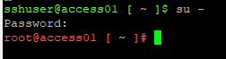
- Run
vi /etc/ssh/sshd_config.
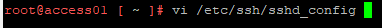
- Scroll down to line containing PermitRootLogin.
- Press <i> on the keyboard to change to insert mode.
- Go to the end of the line and change no to yes.
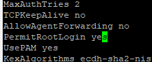
- Press <ESC> to exit insert mode.
- Type
:xto save the file and exit.
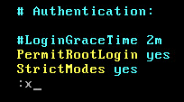
- Run
systemctl restart sshd.
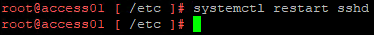
VMware Access Certificate
The Windows Connectors require the VMware Access certificate to be trusted. Generate a new appliance certificate using a trusted Certificate Authority and install the certificate on the appliance.
- Login to the Identity Manager web page as the admin user in the System Domain.
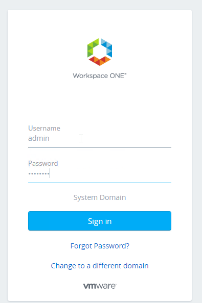
- Click Monitor and then click Resiliency.
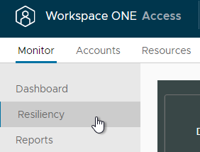
- Click the VA Configuration button next to the appliance name.
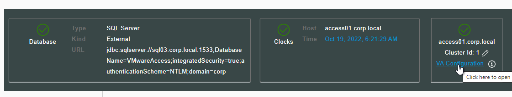
- On the left, click the page named Install SSL Certificates.
- On the right, click Choose File next to Import Certificate File.
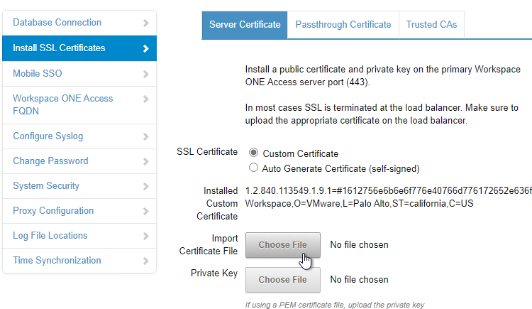
- .pfx files are supported.
- In the Password field, enter the .pfx password.
- Click Save.
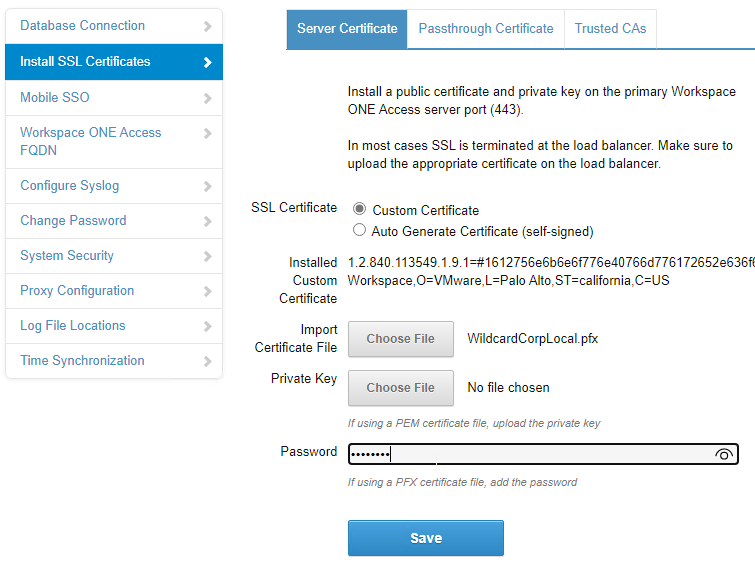
- It will take several minutes for the certificate to be installed and the appliance to restart.
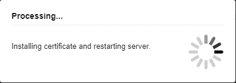
Load Balancing
VMware Access can be cloned, clustered, load balanced, and globally load balanced as shown below. Source = Multi-site Design in the Workspace ONE Access Architecture.

To clone multiple VMware Access appliances and load balance them, see one of the following:
- For Citrix ADC load balancing of VMware Access, see ../VMware-Identity-Manager-Load-Balancing
- For F5 load balancing of Identity Manager, see EUC CST Tech Notes - IDM Steps by steps 3 node cluster - v4.pdf at VMware Communities
Windows Connector
All VMware Access Connectors are Windows Servers.
VMware Access supports Connectors that are the same version or older than the VMware Access appliance.
A Connector with 4 vCPU and 8 GB RAM supports 100,000 users.
- Load balance your VMware Access appliances so the Connector can connect to the Load Balanced FQDN instead of a single VMware Access appliance.
-
Build one or more Windows machines on the internal network that will host the Windows connector. The Windows machines must be joined to the domain.
- Windows Server 2019 is supported in Connector 21.08 and newer.
- Windows Server 2022 is supported by Connector 22.09.1 but not by Connector 22.09.
- See System Requirements at VMware Docs for sizing information.
- Connector Firewall requirements at VMware Docs.
- For multi-data center, build separate Connectors for each data center. The Connectors connect to the VMware Access appliances in the local data center. For details, see Deploying VMware Workspace ONE Access in a Secondary Data Center for Failover and Redundancy at VMware Docs.
- The VMware Access certificate must be trusted by the Connector servers.
- Login to the VMware Access administration console through the load balanced FQDN as the admin user in the System Domain.
- In 22.09 and newer, go to Integrations > Connectors and click New.
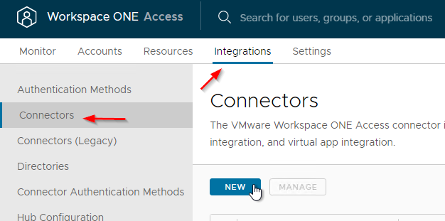
-
In older Access:
-
On the top tabs, switch to Identity & Access Management.
- On the sub-menu bar, on the far right, click Setup.
- On the sub-menu bar, on the left, click Connectors.
- Click the blue NEW button.
- In the Select the Connector page, select the Latest Workspace ONE Access Connector and click OK.
- Click Confirm.
- In the Download Installer page, click the button to Go to myvmware.com and download the connector installer if you haven't downloaded it already. Then click Next.
- In the Download Configuration File page, enter a 14-character password, click Download Configuration File, and save it somewhere. Then click Next.
- In the Summary page, click Close.
- See Workspace ONE Access Connector Systems Requirements at VMware Docs for sizing guidelines. For example, installing all components on a single server requires 12 GB of RAM.
- On the Windows machine, run Workspace-ONE-Access-Connector-Installer-22.09.1.0.exe.
- Click Install to install .NET Framework 4.8.
- Click Yes to restart.
- The Connector installer should automatically launch again. If not, you can launch it manually.
- In the Welcome to the Installation Wizard for Workspace ONE Access Connector page, click Next.
- In the License Agreement page, click I accept the terms, and then click Next.
- In the Service Selection page, click Next.
- In the Specify configuration file page, browse to the es-config.json file downloaded earlier and then click Next.
- In the Select Default or Custom Installation page, choose Custom and then click Next.
- In the Specify Proxy Server Information page, click Next.
- In the Specify Syslog Server Information page, click Next.
- In the Citrix Configuration page, click Next.
- In the Install Trusted Root Certificates page, click Browse and upload your CA and Intermediate certificates that signed the VMware Access certificate. Java uses different root certificates than Windows so you'll need to upload them here so Java can use them. Click Next.
- In the Specify Ports page, click Next.
- If you are installing the Kerberos Auth Service, then select a .pfx certificate that clients will trust and click Next.
- In the Specify Service Account page, enter service account credentials and then click Next.
- The service account must be added to the local Administrators group.
- In the Ready to Install the Program page, click Install.
- In the Installation Wizard Completed page, click Finish
- In VMware Access, go to Integrations > Connectors to see the new Connector. If you don't see it, then check C:\Program Files\Workspace ONE Access\Virtual App Service\logs\eis-service.log on the Connector server.
- Repeat these steps to add another connector. You can use the same es-config.json file.
Configuration
Active Directory
- Login to the VMware Access web page as the admin user in the System Domain.
- In 22.09 and newer, go to Settings > User Attributes.
- In older VMware Access, switch to the Identity & Access Management tab.
- On the top right, switch to the Setup view.
- On the left, switch to the User Attributes sub-tab.
- In older VMware Access, switch to the Identity & Access Management tab.
- In the Default Attributes section, check the boxes next to distinguishedName and userPrincipalName. These are needed for Horizon.
- In the Custom Attributes section, click Add Row and enter objectGUID.
- Add another row and enter mS-DS-ConsistencyGuid. These are needed for Office 365 integration.
- In older VMware Access, in the Add other attributes to use section, click the plus icon and enter objectGUID.
- Click the green plus and add mS-DS-ConsistencyGuid. These are needed for Office 365 integration.
- In older VMware Access, in the Add other attributes to use section, click the plus icon and enter objectGUID.
- At the top of the page, click Save.
- In 22.09 and newer, go to Integrations > Directories and click Add Directory > Active Directory at the top right of the page.
- In older VMware Access, on the top right, switch to the Manage view.
- On the Directories tab, click Add Directory > Active Directory.
- In older VMware Access, on the top right, switch to the Manage view.
- Enter a Directory Name.
- Change it to Active Directory over integrated Windows Authentication.
- Select one or more Connectors as Directory Sync Hosts and User Auth Hosts.
- Select which attribute users should enter as their User Name.
- Scroll down.
- Enter the LDAP Bind credentials. Click Save & Next.
- Select the domains you want to sync and click Next.
- In the Map User Attributes page, scroll down, enter Active Directory attribute names for any missing attribute, and click Next.
- In the Select the Groups page, click the plus icon to add a DN.
- Enter a Base DN in LDAP format and then click Select Groups.
- Search for your Access Users group, select it, and click Save.
- Click Next.
- In the Select the Users page, click Next.
- In the Sync Frequency field, make a selection and then click Sync Directory.
- You can click the link to view the Sync log.
- Or from the main directories list, you can click the directory name, and then click the tab named Sync log to view the log.
- Sync Settings can be changed by clicking the button on the right.
Sync Connector Redundancy
If you build another Windows Connector, you can add it to the Directory as another Sync Service.
- In VMware Access 22.09 and newer, at Integrations > Directories, click the directory.
- Or in older VMware Access, in the VMware Access console, in the Identity & Access Management page, on the left, click the Directories link.
- Click the link for your Active Directory domain.
- Or in older VMware Access, in the VMware Access console, in the Identity & Access Management page, on the left, click the Directories link.
- On the right, click the Sync Settings button.
- Switch to the Sync Service tab.
- Select the new connector and click the plus icon to move it to the bottom.
- You can order the connectors in failover order. Click Save.
Sync Group Membership
By default, VMware Access does not synchronize group members. You can force a sync.
- In VMware Access 22.09 and newer, go to Accounts > User Groups.
- In older VMware Access, go to Users & Groups > Groups.
- In older VMware Access, go to Users & Groups > Groups.
- Notice that the groups are Not Synced. Click the link for a group.
- Switch to the Users tab. Then click the Sync Users button.
Logon Experience
- In VMware Access 22.09 and newer, go to Settings > Login Preferences and click Edit.
- Or in older VMware Access, go to Identity & Access Management > Setup > Preferences.
- Or in older VMware Access, go to Identity & Access Management > Setup > Preferences.
- On the bottom, you can optionally hide the Domain Drop-Down menu. Then select the unique identifier that Identity Manager will use to find the user's domain (typically UPN if multiple domains). VMware Access can show a Domain Drop-Down if a unique domain cannot be identified.
- The user will be prompted to enter the unique identifier.
Administrators
- Sync the user that you want to assign the role to. Or sync the group that the user is a member of. If syncing a group, also sync the members of that group.
- You can assign a role from the Accounts > Users page by clicking a user and then clicking Edit Roles.
- To add a role, in VMware Access 22.09 and newer, go to Accounts > Roles.
- In older VMware Access, go to the Roles tab.
- In older VMware Access, go to the Roles tab.
- You can add a Role. See VMware Blog Post Introducing Role-Based Access Control (RBAC) in VMware Identity Manager 3.2.
- Then you can assign synced users to a role (e.g., Super Admin) by selecting the role and then clicking Assign.
- Search for a synced user and then click Save.
License
- In VMware Access 22.09 and newer, go to Settings > Appliance and then switch to the tab named License.
- Or in older VMware Access, switch to the tab named Appliance Settings.
- Switch to the sub-tab named License.
- Enter the license key and click Save. The Workspace ONE Access license is separate from your Horizon license.
SMTP
- In VMware Access 22.09 and newer, go to Settings > Appliance and click the tab named SMTP.
- In older VMware Access, on the top, click the Appliance Settings tab,
- Click the sub-tab named SMTP.
- Enter your mail server information and click Test Connection and then click Save.
Kerberos Authentication
Kerberos lets users Single Sign-on to the VMware Access web page. Some notes on Kerberos authentication:
- It only works for Windows clients.
-
The clients connect to the Connectors, so firewall must permit the inbound connection to the Connectors on TCP 443.
- For High Availability, load balance your Connectors.
- The Connector (or load balancer) must have a valid, trusted certificate.
- The Connector's FQDN (or load balancer FQDN) must be in Internet Explorer’s Local Intranet zone.
Connector Certificate
To upload a certificate to the Connector:
- On the Windows Connector machine, run the Connector installer.
- In the Program Maintenance page, leave it set to Add/Remove Services and click Next.
- Keep clicking Next until you get to the Install SSL Certificate for Kerberos Auth Service page. Browse to the .pfx, enter the password, and then finish the wizard.
TCP 443 Inbound
TCP 443 must be opened inbound to the Connectors. You might have to add TCP 443 to a Windows Firewall rule.
Enable Kerberos authentication
- In VMware Access 22.09 and newer, go to Integrations > Connector Authentication Methods. Click New and then click Kerberos.
- On in older VMware Access, on the top, go to the Identity & Access Management tab.
- Click the sub-tab named Enterprise Authentication Methods.
- Click the New button and then click Kerberos.
- In the Directory and Hosts page, select the Connectors. Then click Next.
- In the Configuration page, if you plan to load balance the Connectors, then change Enable Redirect to Yes. Then finish the wizard.
- In VMware Access 22.09 and newer, go to Integrations > Identity Providers.
- Or in older VMware Access, go to Identity & Access Management > Identity Providers.
- Or in older VMware Access, go to Identity & Access Management > Identity Providers.
- On the top right, click Add Identity Provider and then click Create Workspace IDP.
- Give the IDP a name.
- In the Users field, select the directory.
- In the Authentication Method field, select Kerberos.
- In the Network field, check the box next to ALL RANGES.
- In the IdP Hostname field, enter the FQDN that is load balanced to the Connectors. Click Add.
Configure Policy to use Kerberos
- In VMware Access 22.09 and newer, go to Resources > Policies and click the Network Ranges button.
- Or in older VMware Access, go to Identity & Access Management > Manage > Policies and click Network Ranges.
- Or in older VMware Access, go to Identity & Access Management > Manage > Policies and click Network Ranges.
- Add a Network Range for internal networks if you haven't already.
- At Resources > Policies, click Edit Default Policy.
- Or in older VMware Access, go to Identity & Access Management > Manage > Policies.
- Click Edit Default Policy.
- Click Next to go to the Configuration page.
- Click Add Policy Rule. Or click the plus icon to add a Policy Rule.
- Select a Network Range for the internal network.
- For and the user accessing content from, set it to Web Browser.
- Optionally configure and user belongs to group(s). When enabled, VMware Access asks the user for username only, and then looks up group membership to determine which authentication methods should be used. See Access Policy Settings at VMware Docs.
- Select Kerberos as the first authentication method.
- Select Password (cloud deployment) as the second authentication method. Click Save or OK.
- Drag the new Policy Rule to move it to the top. Then click Next and Save.
- If you break your config such that you can't login anymore, then see Enabling Break-Glass URL Endpoint /SAAS/Login/0 in Workspace ONE Access at VMware Docs.
Customize Appearance
- You can change the browser’s title and favicon at Settings > Branding.
- Or in older VMware Access, go to Identity & Access Management > Setup > Custom Branding, on the Names & Logos tab.
- Or in older VMware Access, go to Identity & Access Management > Setup > Custom Branding, on the Names & Logos tab.
- The Sign-In Screen section lets you upload a logo, upload an image, and change colors.
- If you go to Settings > Password Recovery, you can configure a link to a password recovery tool or change the Forgot Password message.
- In older VMware Access, find it at Identity & Access Management > Manage > Password Recovery Assistant.
- In older VMware Access, find it at Identity & Access Management > Manage > Password Recovery Assistant.
- If you scroll down, you can optionally Show detailed message to End User when authentication fails.
- For branding of the user portal, go to Integrations > Hub Configuration and click Launch.
- Then go to the Branding page from inside Hub Services.
- Or in older VMware Access, click Catalog, and then click Settings.
- On the left, click User Portal Branding.
- Or in older VMware Access, click Catalog, and then click Settings.
- Make changes to Logos, colors, etc.
- On the top right, click Log out of Hub Services to return to the VMware Access administration console.
Resources
Horizon Console – Enable SAML Authentication
- Login to Horizon Console.
- On the left, under Settings, click Servers.
- On the right, switch to the Connection Servers tab.
- Select a Connection Server and click Edit.
- On the Authentication tab, change Delegation of authentication to VMware Horizon to Allowed.
- Click Manage SAML Authenticators.
- Click Add.
- In the Label field, enter a descriptive label.
- In the Metadata URL field, enter the VMware Access FQDN.
- In the Administration URL field, enter the VMware Access FQDN, and click OK.
- If you see a certificate error, click View Certificate, and then click Accept.
- Click OK to close the Manage SAML Authenticators window.
- There's a Workspace ONE mode, which forces all Horizon Clients to connect through VMware Access instead of directly to the Connection Servers. Delegation of authentication must be set to Required before Workspace ONE mode can be enabled.
VMware Access – Virtual Apps Collection for Horizon
- In the VMware Access Admin Portal, go to Resources > Virtual Apps Collections.
- Or in older VMware Access, in the VMware Access Admin Portal, click the Catalog tab, and then click Virtual Apps Collection.
- Or in older VMware Access, in the VMware Access Admin Portal, click the Catalog tab, and then click Virtual Apps Collection.
- If you see Introducing Virtual Apps Collection page, click Get Started.
- Click the SELECT link in the Horizon box. Note: Horizon Cloud is only for Single Pod brokers. For Universal Broker, configure it from inside Horizon Cloud.
- Give the Horizon Connection a name.
- Arrange the Sync Connector appliances in priority order. Click Next.
- Click Add a Pod.
- Enter the FQDN of a Connection Server in the Pod.
- Enter Horizon View admin credentials in UPN format. The account needs at least Read Only Administrator access to Horizon.
- There's a True SSO option if you enabled a password-less authentication (e.g., SAML) to VMware Access.
- Click Add.
- You can optionally add more pods and then enable the Cloud Pod Architecture option. Click Next when done.
- Change the Sync Frequency and Safeguards as desired.
- Click Next when done.
- Click Save & Configure. The connection is tested at this time.
- The URLs for accessing Horizon are defined in each Network Range. For each Horizon URL, create Network Ranges. Or click All Ranges.
- Near the bottom, in the Client Access FQDN field, enter the FQDN that users in this Network Range use to login to Horizon. Then click Save. Note: the Horizon FQDN is different than the VMware Access FQDN.
- After the Horizon Virtual Apps Collection is added, switch to the Overview tab, select the collection, and click Sync without safeguards.
- Note: whenever you make a change to the pools in Horizon Administrator, you must either wait for the next automatic Sync time, or you can return to this screen and click Sync.
- You can click the alert icon to see issues.
- If you go to Resources > Virtual Apps, you will see your synced Application and Desktop pools
Horizon Pools Catalog
- In the VMware Access Admin console, at Resources > Virtual Apps, you can see the Horizon View icons. Only the pools in the root Access Group are synced.
- Click an icon, and then click View Assignments.
- Make sure entitlements are listed. Entitlements are assigned in Horizon Console, and not in VMware Access. VMware Access merely syncs the entitlements from Horizon.
- Only AD groups synced to VMware Access will be displayed. Domain Users are not synced by VMware Access and thus won't be displayed here.
- If you make changes in Horizon Console, then manually sync the Virtual Apps Collection so the changes are reflected in VMware Access.
-
Back in the Virtual Apps list, if you check the box next to one of the icons, you can place the icon in a Category by clicking the Categories menu.
- You can select or more existing categories.
- Or type in a new category name at the top of the list.
3The category is then displayed next to the catalog item.
- There's also a Recommended category.
- Recommended icons can be found in the User Portal at Apps > Recommended. Users can click the Categories drop-down to see other categories. Users have to logoff and log back in to see Category changes.
- In VMware Access 22.09 and newer, user portal settings are configured in Hub Services. Launch it from Integrations > Hub Configuration.
- The App Catalog page has some settings for the Catalog Layout.
-
Or in older VMware Access:
-
Go to Catalog > Settings.
- On the left, click User Portal Configuration.
- From this screen, you can control tab visibility, and put recommended apps in the Bookmarks tab. Click Save when done.
- You can select or more existing categories.
User Portal
The User Portal (aka Intelligent Hub) is the interface that non-administrators see after logging in. Administrators can switch to the User Portal by clicking the username on the top right and clicking User Portal.
Administrators in the User Portal can switch to the Workspace ONE Access Console by clicking the username on the top right.
Some User Portal features:
- When a user logs in to the VMware Access web page the pool icons will be displayed.
- When the user clicks an icon, you can use either Horizon client or Browser for opening a pool.
-
To set the default launch method:
- On the top right, click your name, and click Account.
- In the Horizon Remote Apps section, click either Horizon Client or click Browser.
- The Horizon Client option has a link to download and Install the Horizon Client.
- Back in the Apps list, to mark an icon as a Favorite, click the three dots next to an icon and then click Add to Favorites.
- Or open an app's Details page, and then click the star icon.
- Then you can click Favorites tab to display only icons that are marked as Favorites.
- If you configured Categories, they are listed in the Apps tab in the Categories drop-down.
- On the top right, click your name, and click Account.